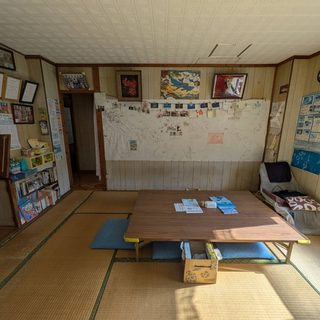

Where to stay on Zamami — by travel style座間味の宿 — 旅のスタイル別
Okinawa Island Guide · 2026Okinawa Island Guide · 2026
Zamami is small, but don't leave your stay to chance. Always book ahead — it's essential in summer, and a good idea year-round. The island has a limited number of rooms, and turning up without a reservation can leave you with nowhere to stay, so don't plan to just find a place after you arrive. What really differs between places is the style of stay and the area — filter the list below.座間味は小さな島ですが、宿は必ず事前予約を。夏は特に必須、それ以外の時期も基本は予約を。部屋数が限られ、無予約で来ると泊まれないこともあるため、「島に着いてから宿を探す」は避けましょう。違うのは泊まる「スタイル」と「エリア」。下のリストで絞り込んでください。
Three hamlets.Zamami is the island's "capital" — everything is within a 5-minute walk of the port, with the most restaurants and shops, so it's the most convenient base. Ama and Asa are about 20–30 minutes away (a village bus connects them): Ama sits right in front of Ama Beach, while Asa faces a calm, quiet bay. If you want slow, peaceful time, Ama and Asa are lovely choices.集落は3つ。座間味（Zamami）は島の“中心地”で、すべて港から徒歩5分圏内。飲食店や商店が最も多く、いちばん便利です。阿真（Ama）・阿佐（Asa）は徒歩20〜30分（村営バスで移動）。阿真は阿真ビーチ目の前の集落、阿佐は落ち着いた湾の目の前。静かにのんびり過ごしたいなら阿真・阿佐もおすすめです。
Find your styleスタイルで選ぶ
Tap a tag to filter. Each stay can match more than one.タグをタップで絞り込み。宿は複数タイプに該当することもあります。

Homestay Kucha
Asa · quiet bay · village bus from the port
A welcoming guesthouse in the quiet Asa area, with home-cooked island meals and guests from around the world — local island life and an international table in one. The atmosphere is geared toward international visitors rather than a traditional Japanese-style minshuku. Booking and messaging ahead work smoothly in English; on the island the hosts aren't fluent in English, but — as guests note — with a translation app such as Google Translate, communicating is no trouble at all.阿佐エリアの静かな一角にある、家庭料理と世界中からのゲストが集う温かいゲストハウス。島の暮らしと国際的な食卓を一度に。日本の伝統的な民宿というより海外からの旅行者向けの雰囲気。予約や事前のやりとりは英語でスムーズ。現地ではオーナーが流暢に英語を話すわけではありませんが、口コミでも「Google翻訳などを使えばコミュニケーションに全く支障がなかった」と好評です。
A family-run guesthouse-and-dive-shop one minute from the port — guests praise the excellent diver facilities (a shower straight out of the sea, gear wash-and-dry space), the delicious meals and the attentive, hugely experienced dive guiding. Welcoming to non-divers and solo travellers too. Rooms are simple — no in-room TV or fridge (there's a shared fridge downstairs) — so it best suits divers who value the location and dive service over frills. English is fine to a reasonable level.港から徒歩1分、家族経営の民宿＆ダイビングショップ。口コミでは、海から上がってすぐのシャワーや器材の洗い場など充実したダイバー設備、美味しい食事、経験豊富で丁寧なガイドが高評価。ダイバー以外や一人旅にもやさしい宿。客室はシンプルで、テレビ・冷蔵庫は客室になし（1階に共同冷蔵庫）。設備の充実より、立地とダイビングサービスを重視するダイバー向け。英語はある程度通じます。
A friendly, well-rated inn in the centre of the village, three minutes from the port and near shops and eateries — guests praise the warm, attentive hosts and the tasty home-cooked meals made with local ingredients, at an easy price. Microwave and fridge are shared, and reviewers often call it great value for the money — best for those wanting warm, honest hospitality and home cooking without paying resort prices. English is fine to a reasonable level.村の中心、港から徒歩3分、商店や飲食店も近い評価の高い宿。口コミでは、温かく丁寧な接客と、地元食材を使った家庭料理の美味しさが手頃な価格で楽しめる点が好評で、コスパの良さがよく挙げられます。電子レンジ・冷蔵庫は共用。リゾート価格でなく、温かく正直なもてなしと家庭料理を楽しみたい人向け。英語はある程度通じます。
A quiet minshuku in Ama, two minutes from turtle-famous Ama Beach — guests especially praise the home-cooked meals made with local Okinawan ingredients and the kind, flexible hosts, plus clean rooms, free bikes and WiFi. A few reviews note the (tasty) meals can be modest in portion, and it's a bus ride from the port — best if you want a quiet, beachside base by the turtles. English is fine to a reasonable level.ウミガメで名高い阿真ビーチから徒歩2分、阿真集落の静かな民宿。口コミでは、沖縄の地元食材を使った手の込んだ料理と、親切で融通のきくもてなしが特に好評。清潔な客室・無料レンタサイクル・WiFiも。口コミでは料理はおいしいが量は控えめという声や、港からは離れている点も。ウミガメの海のそばで静かに過ごしたい人向け。英語はある程度通じます。
A homely pension 3–5 minutes from the port with an adjacent dive centre — guests praise the friendly, homely feel, the tasty meals made with local ingredients and the clean en-suite rooms. Especially handy for divers — best for those wanting a relaxed, no-frills homely pension near the port. Some basic English is spoken.港から徒歩3〜5分、ダイブセンター併設のアットホームなペンション。口コミでは、家庭的な雰囲気、地元食材の美味しい料理、清潔なバス・トイレ付き客室が好評。ダイバーにも便利。港近くで気取らずアットホームに泊まりたい人向け。簡単な英語なら通じます。
A newer pension one minute from the port — guests appreciate the self-catering rooms with a mini-kitchen (plus a BBQ area and garden), the clean facilities and the friendly owner, plus an outdoor shower and gear-wash space. On the flip side, some guests note compact bathrooms, hot water and water pressure that can be limited at times, and — as on many small islands — the occasional insect. Some basic English is spoken.港から徒歩1分の比較的新しいペンション。口コミでは、ミニキッチン付きで自炊できる客室（BBQ・庭も）、清潔な設備、親切なオーナーが好評。屋外シャワーや器材の洗い場も。一方で、浴室が狭め・時間帯によりお湯や水量が限られる・離島ゆえ虫が出ることがある、という声も。簡単な英語なら通じます。
The island's only foreign-owned guesthouse, with English-speaking (and multilingual) staff and a largely international crowd. Hostel-style beds (from around ¥2,500) and a social terrace make it easy to meet other travellers. It's a lively, sociable hostel, so light sleepers should note the dorms and bar can get noisy, privacy and storage are limited, and it can be cash-only — best for budget-minded, sociable travellers rather than those after quiet or privacy.島で唯一の外国人経営ゲストハウス。英語（＋多言語）対応スタッフで宿泊客の多くが海外から。ドミトリー中心（目安￥2,500〜）＋交流テラスで旅人同士つながりやすい。にぎやかで社交的なホステルのため、口コミではドミトリーの朝やバーの夜が騒がしい・収納やプライバシーが限られる・現金のみの場合があるといった声も。静けさやプライバシーより、交流と低予算を重視する人向け。
Zamami's upscale choice — guests single out the rare ocean-view rooms and comfortable beds, the clean, refined interiors, and the on-site restaurant and bar (craft cocktails and local beer). Private pool and jacuzzi. A few guests found the standard/twin rooms compact and breakfast Western-only, so it suits those wanting the island's most comfortable, resort-style base rather than lots of space. It's the island's priciest choice (rooms from roughly ¥23,000 per person), but reviews rarely fault the value — guests feel the comfort, service and rooftop stargazing justify the cost. Some basic English is spoken.座間味では上質系の代表格。口コミでは、島では希少なオーシャンビュー客室と寝心地の良いベッド、清潔で洗練された内装、併設のレストラン＆バー（クラフトカクテル・地ビール）が特に評価されています。プライベートプール＆ジャグジーも。一方でスタンダード／ツインの客室は少し狭め・朝食は洋食のみという声もあり、広さより島いちばんの快適さ・リゾート感を求める人向け。島でいちばんの高価格帯（1名あたりおよそ2万3千円〜）ですが、口コミでコスパを不満とする声は少なく、快適さ・サービス・屋上の星空を思えば納得という評価が多めです。簡単な英語なら通じます。
On the main street in the centre of the village, steps from shops and restaurants — guests praise the handy location, the clean, pension-style rooms and kind staff, and the tasty food at the adjacent café-restaurant. (Shower rooms, no bathtub.) A few reviews note prices have crept up in recent years. Some basic English, and popular with international travellers.村の中心・メイン通り沿いで、商店や飲食店まで数歩。口コミでは、便利な立地、清潔なペンション風の客室と親切なスタッフ、隣接カフェレストランの美味しい料理が評価されています。（浴槽はなくシャワー）近年は料金が上がったという声も。簡単な英語なら通じ、海外の旅行者にも人気。
A small pension in the centre of the village, a few minutes from the port — guests love the home-cooked Okinawan food from the mother-and-daughter kitchen (the fresh local sashimi gets special mention), the kind hospitality and the clean rooms. These days meals may be breakfast-only, so check when booking. Some basic English is spoken.村の中心、港から数分の小さなペンション。口コミでは、母娘の手づくり沖縄料理（新鮮な地元の刺身が特に評判）、親切なもてなし、清潔な客室が好評です。近年は朝食のみの提供になっている場合があるため予約時に確認を。簡単な英語なら通じます。
Compiled from real guest reviews and each property's own information — we highlight what guests genuinely praise, and note honest caveats where they help. Basic facility info follows the Zamami Village Tourism Association; distances are approximate walking times from Zamami Port. Details, prices and English support can change, so please confirm directly with each property. Links go to each property's own website where available.実際の宿泊者の口コミと各宿の情報を基に、本当に評価されている点を紹介しつつ、参考になる正直な短所も添えています。施設の基本情報は座間味村観光協会に準拠、距離は座間味港からの徒歩の目安です。内容・料金・英語対応は変わることがあるため、予約前に各施設へ直接ご確認ください。リンクは可能な限り各宿の公式サイトです。
Run a place to stay on the island? If you'd like it considered for this guide, send us a DM on Instagram.島で宿を運営されている方へ：このガイドへの掲載をご希望の場合は、InstagramのDMからご連絡ください。